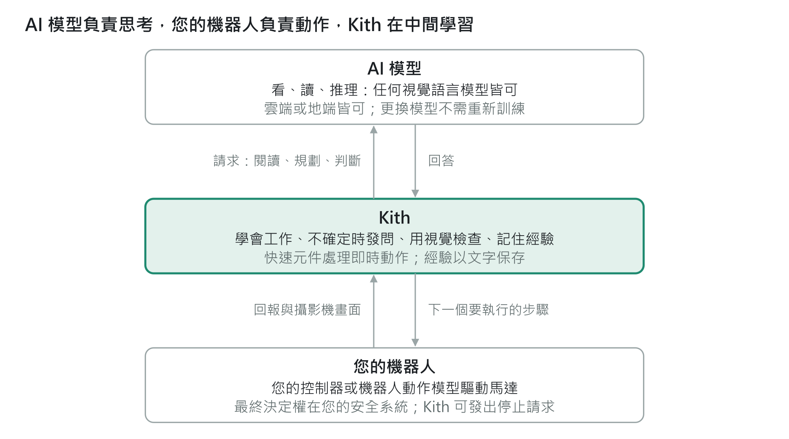

用機器人既有的技能完成新工作
「颱風過後，檢查屋後的排水溝。」Kith 會運用機器人本身的技能（前往、察看、比對）來規劃，並檢查結果。
Kith 如何運作

最上層由通用的視覺語言模型（VLM）負責思考：它讀懂指令、理解攝影機影像，並規劃工作。它的速度太慢，無法控制馬達，因此從不進入即時控制迴路。
中間層是 Kith：它把計畫轉成由許多小步驟組成的程式，並加以執行。凡是必須快速完成的事，例如偵測飛行中的球，都由 Kith 為這項工作打造的小型快速元件負責。
最下層由機器人本身的控制器或機器人動作模型驅動馬達，並確保機器人的安全。
Kith 會透過機器人的攝影機與感測器確認每一個步驟。它從練習與人的建議中學習，並把學到的東西存成人可以閱讀、修正的程式與筆記。大型 AI 模型從不需要重新訓練。
「颱風過後，檢查屋後的排水溝。」Kith 會運用機器人本身的技能（前往、察看、比對）來規劃，並檢查結果。
「接球不要反彈：配合球的速度。」練習會微調動作，而教練的建議可以改變動作本身。不需要訓練任何 AI 模型。
Kith 學到的東西會以人看得懂的文字保存，而不是藏在 AI 模型裡。
Kith 是軟體，可以用不只一種方式與機器人搭配。如果機器人有合適的處理器，Kith 可以直接在機器人上執行；也可以在附近的電腦上執行，從那裡控制較簡單的機器人，例如基本款無人機。它既能搭配能用語言接收任務的智慧型機器人，也能搭配只接收速度與轉向指令的簡單機器人。至於 Kith 與每一款機器人的具體連接方式，我們會與設計夥伴共同規劃。
無論採用哪種配置，最終決定權永遠在您機器人自己的安全系統。Kith 可以隨時發出停止請求，由您的機器人決定如何安全地停下來。
Kith 會依照每一台機器人與每一項工作的需要，隨需自行打造以下工具。您不需要具備任何 AI 或軟體專業。
一種小型視覺模型，專門快速辨識一種東西，用在大型 AI 模型來不及反應的場合：飛行中的球、輸送帶上的零件、產品瑕疵。它會自動訓練，完全不需要人工標註；由通用 AI 模型負責標註影像，並持續檢查它的成果。
它在您的機器人或其模擬器上練習一項動作技能，並在每一輪之後調整該技能的參數。它會測量每一次失誤、學習您的機器人實際上如何運動，讓每一項新技能起步就領先。
在雜亂或極大的場景中，慧眼能實現零樣本或單樣本物件辨識，速度遠快於單靠一般視覺語言模型。
Kith 內含多個模組，每個模組都是一組現成的技能，製造商可以為機器人挑選所需的模組。有些模組已能在模擬環境中運作，其他則在規劃中。
| 模組 | 為您的機器人帶來什麼 |
|---|---|
| Sentinel 哨兵 Kith 自有的語意 SLAM | 快速建立場域地圖、辨識地點與物品、依口語指示前往目的地（「廚房再過去的那個房間」）、巡邏、盤點，並依屋主的需求回報變化 |
| Swarm 機群 | 將能力各異的多台機器人與無人機編組成團隊。它分派工作、讓各團隊步調一致、在任何機器人故障時補位、執行排定的巡邏，透過 Mind Patch（心智補丁）即時升級旗下的機器人，並依場域本身的規則發出警報 |
| 感知 | 只需一張範例圖片，就能學會辨識新的零件或產品；並透過 Mind Patch 強化機器人上小型 AI 模型的辨識能力，無需重新訓練 |
| 動作技能 | 拋球、接球與輕柔接球，透過練習學會，並可轉移到另一支手臂 |
| 分揀站 | 依照人所訂定、可隨時更改的規則分揀混雜的物品，並以每件物品所需的方式小心處理 |
| 人際技能 | 認識與機器人共事的人：他們的權限等級、偏好、意圖與所屬群組 |
| 教學 | 當 Kith 精通一項工作後，能把它教給人 |